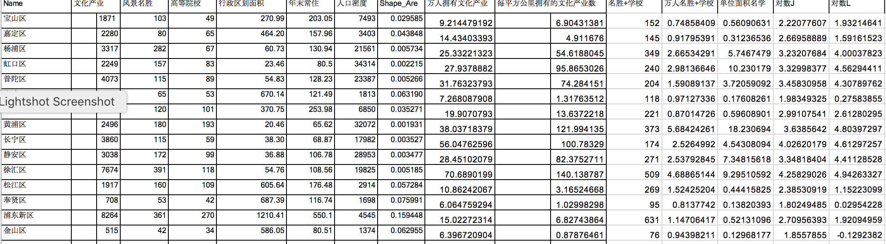
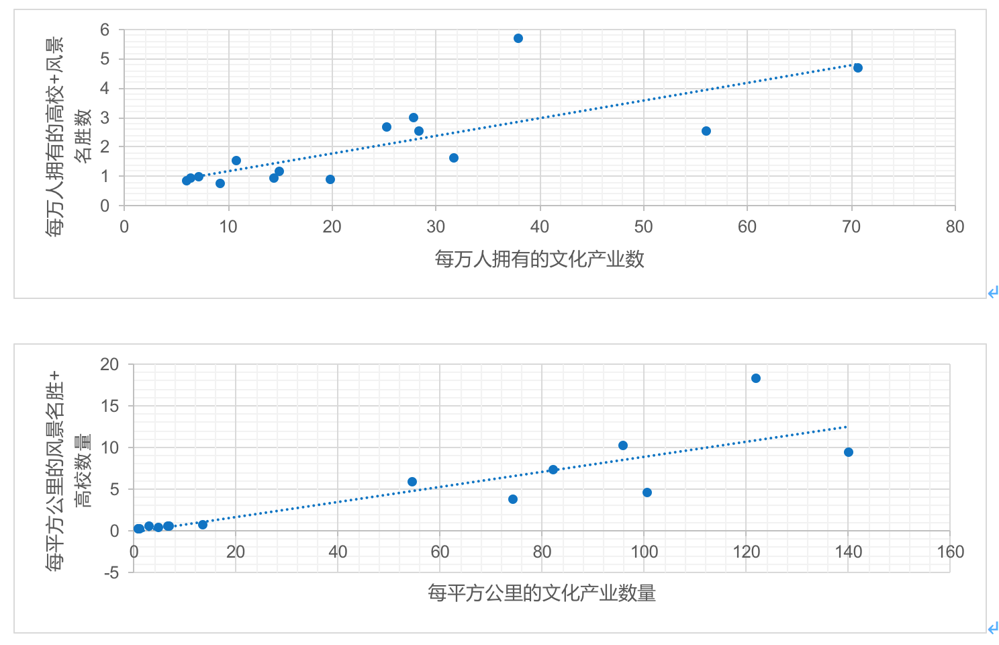
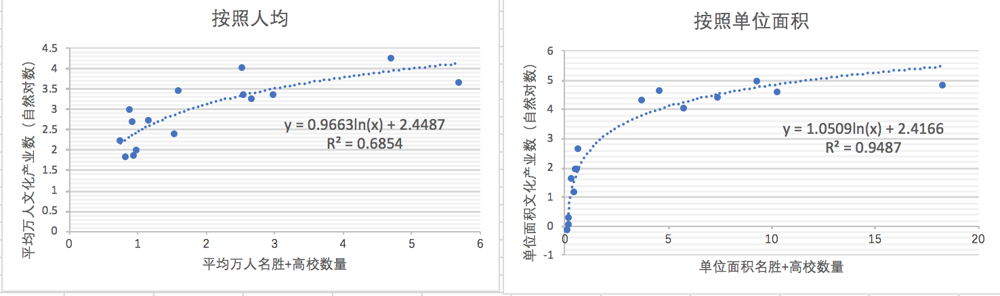

关于具体到量化历史对于文化产业发展的关系，这是一个很难得命题。一是因为许多历史事 件的影响难以统计，并且几百年来上海的行政区域划分发生过巨大的变化。二是我们手头的现有数据只是最新的文化产业统计，缺乏历史上各个时期的文化产业数据，无法对文化产业的发展变 化进行研究。因此，我们选择在现有的数据中寻找可以替代历史影响的因素。本来我们想在风景 名胜中寻找人文遗产并过滤掉自然风景，但在查看了数据后发现人文景点和自然景点全都被划分 到一类里去了，于是我们只好选择全部类别的风景名胜和高等院校两组数据作为影响因素。
我们从网上采集了上海市各区常住人口和区划面积，针对以上影响因素和文化产业数量算出 每平方千米和没万人所拥有的数量，进行线性规划拟合，结果如下图所示。
从上图可以看出虽然能够看出合理的线性规划，但有些区的数据仍呈现出较大的误差，例如 黄浦区，坐拥最高的景点数与高校数，在人均的占有量和单位面积占有量上却无法占据榜首。不 过考虑到这种方法不太好，我们对Y轴取了下自然对数，然后交换X与Y(实际相当于直接对X轴取 自然对数)，调整了下关系，得到了下面的结果。
可以看到，取了对数后，误差相对缩小了很多，用对数函数进行拟合也比一元线性拟合要准 确不少，特别是在单位面积文化产业数量与相关历史遗留资源的关系上，已经得到了十分准确的 模型。不过只有这几个区县的数据作对比实在是样本太少，总结出关系也不能说十分准确，只能 大致看出一些联系，如果可以获得更准确的名胜分类信息，筛选出真正的历史文化遗产，并且考 虑一些无形的因素影响，应该会的得到更好的结果。